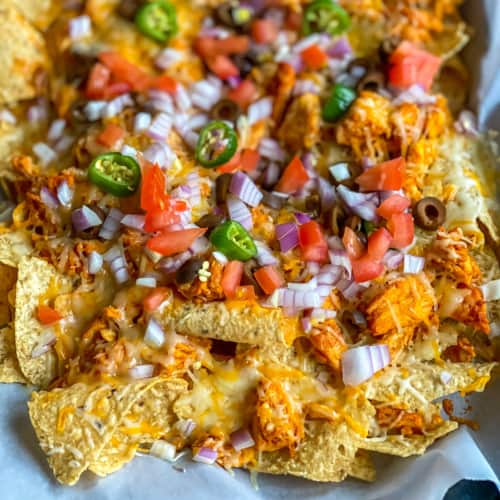

Super Nachos

Description
An easy-to-make recipe, these nachos are guaranteed to be an absolute hit at your next get-together! Feel free to adjust ingredient quantities to your liking (I prefer to eyeball it most times myself).
Ingredients
- One bag tortilla chips
- One 11.5 oz can refried beans
- One Roma tomato
- One 4 oz can green chiles
- One red onion
- 1 lb boneless, skinless chicken thighs
- cilantro
- One jalapeno
- 1 teaspoon cumin
- 1 teaspoon chili powder
- 2 teaspoons taco seasoning
- 1 teaspoon cayenne pepper
- 1 teaspoon garlic powder
- 1 teaspoon onion powder
- One bag shredded colby jack cheese
Steps
- Preheat oven to 350 degrees F (177 degrees C).
- Rinse chicken. Pat dry and season with chili powder, cumin, garlic powder, onion powder, cayenne pepper, and taco seasoning. Add green chiles and pressure cook on high for fifteen minutes.
- While chicken is cooking, dice tomato, onion, jalapeno, and cilantro. Warm refried beans on stovetop at low-medium heat.
- Line an ungreased baking sheet with tortilla chips.
- Shred chicken with a fork after its finished cooking. Top chips with shredded chicken, beans, diced jalapeno, diced onion, and cheese. Layer if desired.
- Bake in preheated oven for 5-7 minutes, or until cheese is melted. Top with diced tomato and enjoy.